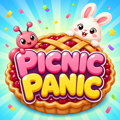

A cosy critter tower defense game: guard the picnic across 120 levels in 12 tasty worlds.
Email us at info@apkings.com and we'll get back to you.
Do I need the internet? No, the game works fully offline.
Where is my progress saved? On your device only. Deleting the app removes your progress.
No sound? Tap the screen once and check that the speaker button in the game is on and your device's silent switch is off.
© 2026 APKINGS (PRIVATE) LIMITED